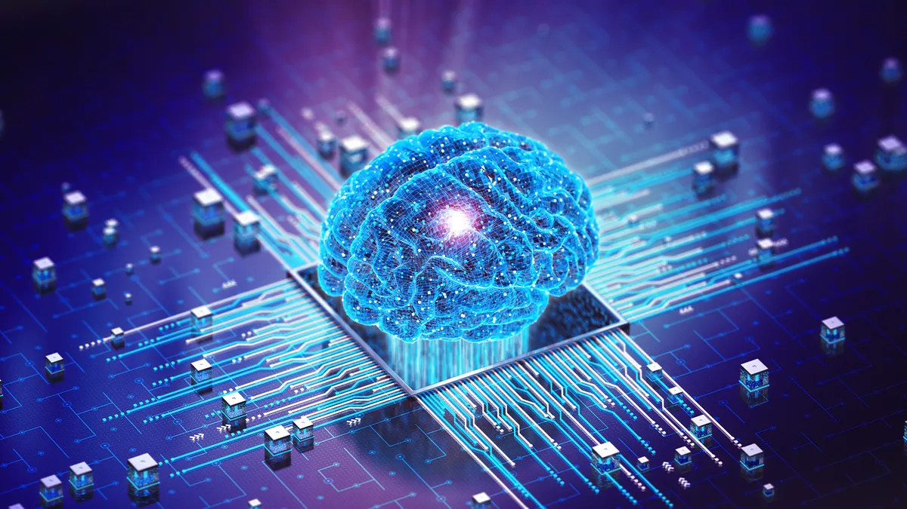

What Is Artificial Intelligence ?
Artificial intelligence refers to computer systems that are capable of performing tasks traditionally
associated with human intelligence — such as making predictions, identifying objects, interpreting
speech and generating natural language. AI systems learn how to do so by processing massive amounts of
data and looking for patterns to model in their own decision-making. In many cases, humans will
supervise an AI’s learning process, reinforcing good decisions and discouraging bad ones, but some AI
systems are designed to learn without supervision.
Over time, AI systems improve on their performance of specific tasks, allowing them to adapt to new
inputs and make decisions without being explicitly programmed to do so. In essence, artificial
intelligence is about teaching machines to think and learn like humans, with the goal of automating work
and solving problems more efficiently.
Why Is Artificial Intelligence Important ?
Artificial intelligence aims to provide machines with similar processing and analysis capabilities as
humans, making AI a useful counterpart to people in everyday life. AI is able to interpret and sort data
at scale, solve complicated problems and automate various tasks simultaneously, which can save time and
fill in operational gaps missed by humans.

AI serves as the foundation for computer learning and is used in almost every industry — from healthcare
and finance to manufacturing and education — helping to make data-driven decisions and carry out
repetitive or computationally intensive tasks.
Many existing technologies use artificial intelligence to enhance capabilities. We see it in smartphones
with AI assistants, e-commerce platforms with recommendation systems and vehicles with autonomous
driving abilities. AI also helps protect people by piloting fraud detection systems online and robots
for dangerous jobs, as well as leading research in healthcare and climate initiatives.
How does AI work ?
While scientists can take many approaches to building AI systems, machine learning is the most widely
used today. This involves getting a computer to analyze data to identify patterns that can then be used
to make predictions.
The learning process is governed by an algorithm — a sequence of instructions written by humans that
tells the computer how to analyze data — and the output of this process is a statistical model encoding
all the discovered patterns. This can then be fed with new data to generate predictions.
Many kinds of machine learning algorithms exist, but neural networks are among the most widely used
today. These are collections of machine learning algorithms loosely modeled on the human brain, and they
learn by adjusting the strength of the connections between the network of "artificial neurons" as they
trawl through their training data. This is the architecture that many of the most popular AI services
today, like text and image generators, use.
Most cutting-edge research today involves deep learning, which refers to using very large neural
networks with many layers of artificial neurons. The idea has been around since the 1980s — but the
massive data and computational requirements limited applications. Then in 2012, researchers discovered
that specialized computer chips known as graphics processing units (GPUs) speed up deep learning. Deep
learning has since been the gold standard in research.
"Deep neural networks are kind of machine learning on steroids," Hooker said. "They're both the most
computationally expensive models, but also typically big, powerful, and expressive"
Not all neural networks are the same, however. Different configurations, or "architectures" as they're
known, are suited to different tasks. Convolutional neural networks have patterns of connectivity
inspired by the animal visual cortex and excel at visual tasks. Recurrent neural networks, which feature
a form of internal memory, specialize in processing sequential data.
Benefits of AI
AI is beneficial for automating repetitive tasks, solving complex problems, reducing human error and
much more.
Automating Repetitive Tasks
Repetitive tasks such as data entry and factory work, as well as customer service conversations, can all
be automated using AI technology. This lets humans focus on other priorities.
Solving Complex Problems
AI’s ability to process large amounts of data at once allows it to quickly find patterns and solve
complex problems that may be too difficult for humans, such as predicting financial outlooks or
optimizing energy solutions.
Improving Customer Experience
AI can be applied through user personalization, chatbots and automated self-service technologies, making
the customer experience more seamless and increasing customer retention for businesses.
Advancing Healthcare and Medicine
AI works to advance healthcare by accelerating medical diagnoses, drug discovery and development and
medical robot implementation throughout hospitals and care centers.
Reducing Human Error
The ability to quickly identify relationships in data makes AI effective for catching mistakes or
anomalies among mounds of digital information, overall reducing human error and ensuring accuracy.
How can I use AI ?
AI comes in different forms and has become widely available in everyday life. The smart speakers on your
mantle with Alexa or Google voice assistant built-in are two great examples of AI. Other good examples
include popular AI chatbots, such as ChatGPT, the new Bing Chat, and Google Bard.
When you ask ChatGPT for the capital of a country, or you ask Alexa to give you an update on the
weather, the responses come from machine-learning algorithms.
What are the different types of AI ?
Artificial intelligence can be divided into three widely accepted subcategories:
1.
narrow AI
2.
general AI
3.
super AI
What is narrow AI ?
Artificial narrow intelligence (ANI) is crucial to voice assistants like Siri, Alexa, and Google
Assistant. This category includes intelligent systems designed or trained to carry out specific tasks or
solve particular problems without being explicitly designed.
ANI might often be called weak AI, as it doesn't possess general intelligence. Still, some examples of
the power of narrow AI include voice assistants, image-recognition systems, technologies that respond to
simple customer service requests, and tools that flag inappropriate content online.
What is General AI
Artificial general intelligence (AGI), or strong AI, is still a hypothetical concept as it involves a
machine understanding and performing vastly different tasks based on accumulated experience. This type
of intelligence is more on the level of human intellect, as AGI systems would be able to reason and
think like a human.
Like a human, AGI could potentially understand any intellectual task, think abstractly, learn from its
experiences, and use that knowledge to solve new problems. Essentially, we're talking about a system or
machine capable of common sense, which is currently unachievable with any available AI.
Developing a system with consciousness is still, presumably, a fair way in the distance, but it is the
ultimate goal of AI research.
What is Super AI
Artificial superintelligence (ASI) is a system that wouldn't only rock humankind to its core but could
also destroy it. If that sounds like something straight out of a science fiction novel, it's because it
kind of is. ASI is a system where the intelligence of a machine surpasses all forms of human
intelligence in all aspects and outperforms humans in every function.
An intelligent system that can learn and continuously improve itself is still a hypothetical concept.
However, if applied effectively and ethically, the system could lead to extraordinary progress and
achievements in medicine, technology, and more.